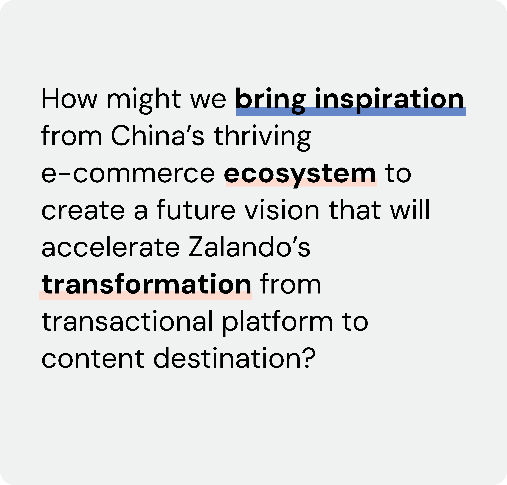
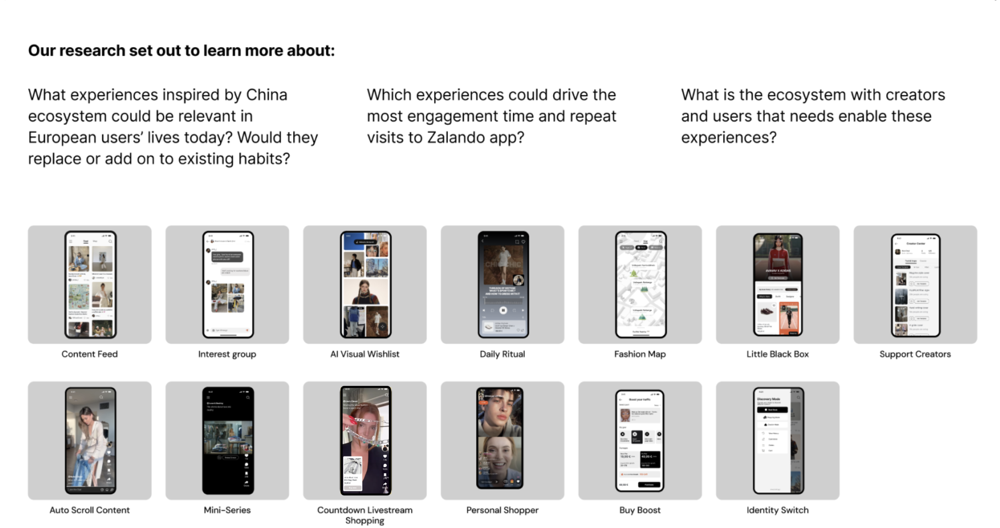
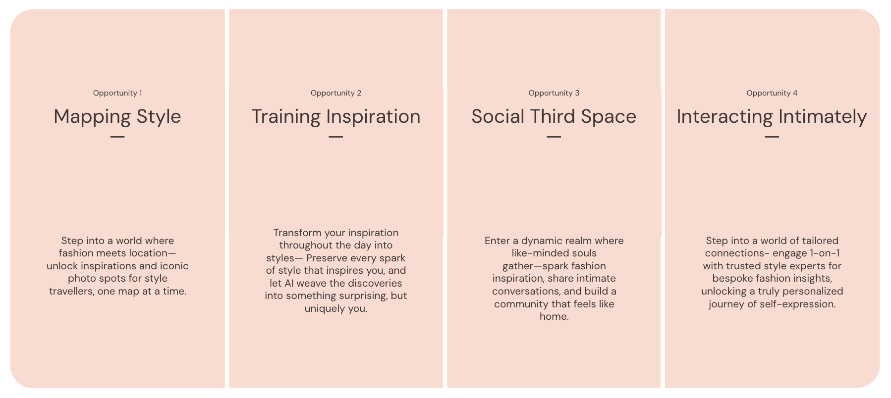
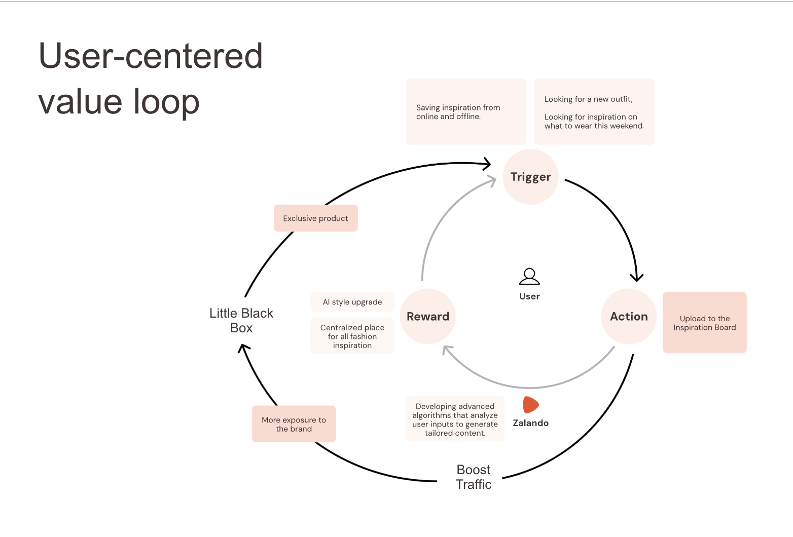
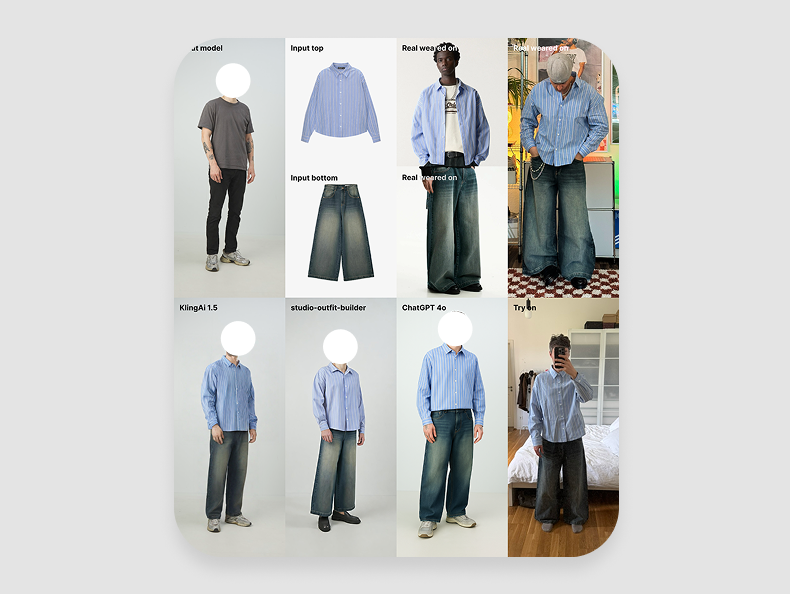
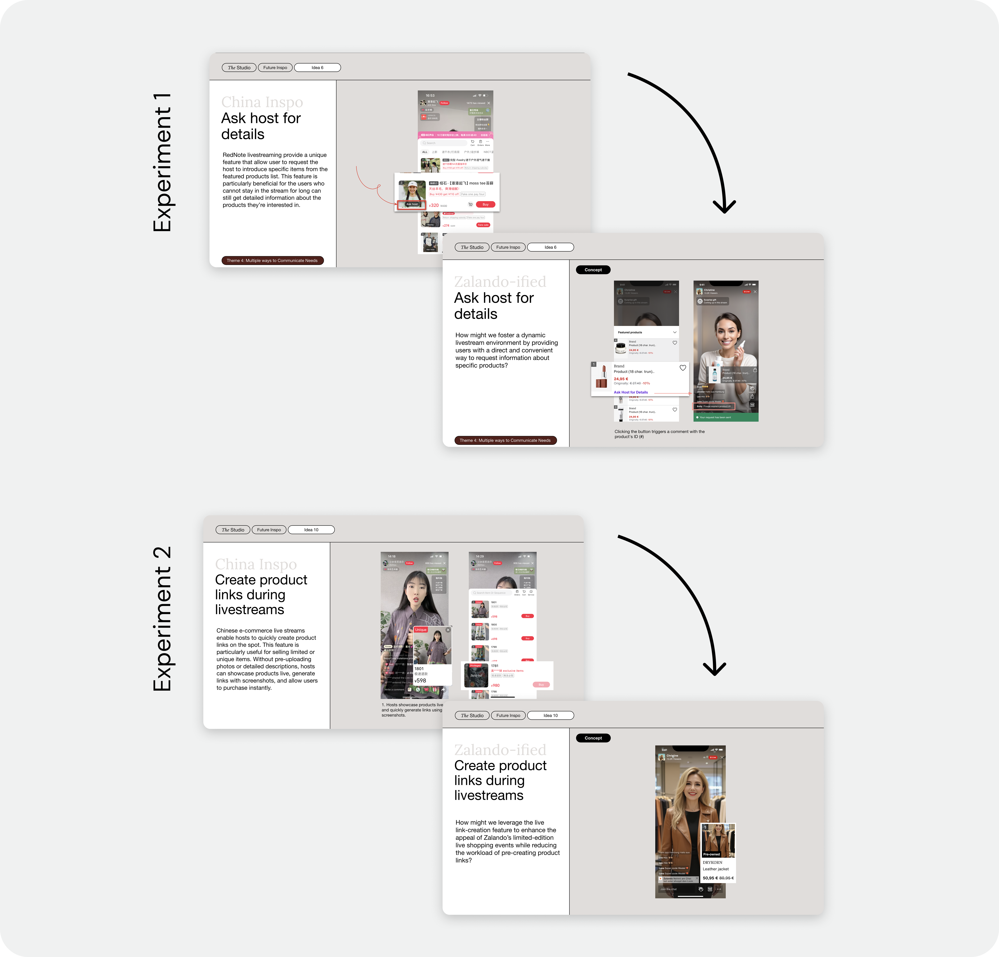

02 Case Study
Launching New R&D
I was appointed Design Lead to establish Zalando's first Asian R&D center — building a localized innovation engine to capture market signals from Chinese e-commerce, under an aggressive timeline and strict data-compliance constraints.

The Challenge
A six-month timeline and a legal data deadlock
Six months. A team to hire from scratch. And a legal wall between them and their tools. I was appointed to build Zalando's first Asian R&D center — with the Chinese team legally barred from accessing internal Figma files and user data under GDPR and strict security protocols.
The mission wasn't just to staff a hub — it was to build the operational bridges that would make the new team genuinely strategic, not an outsourced execution arm.
Approach
Building the bridges for local expertise to thrive
-
1
Market intelligence
Managed a partnership with IDEO Shanghai as our eyes and ears on the ground, co-designing SVP workshops that translated Asian market signals — Live Commerce, Visual Search — into an EU-relevant roadmap.
-
2
A sanitized data bridge
Partnered with Legal and Security to architect a mirrored, GDPR-compliant Figma environment and research protocol — transforming what was a hard legal blocker into the infrastructure for a high-velocity innovation engine.
-
3
Localized talent & rituals
Redefined the hiring architecture to bridge EU/CN cultural gaps, retrained 8 interviewers on cultural awareness, and established a cross-functional "Support Squad" ritual to integrate the hub into HQ culture.

Working with IDEO
Combining market intelligence with strategic intent
IDEO Shanghai brought what we couldn't easily get from Berlin: deep, on-the-ground knowledge of Chinese consumer behaviour, emerging patterns, and what was already working at scale. I brought the other half — who the Zalando user is, where our roadmap was heading, and the strategic constraints we were working within. Together we ran a structured assessment of the bets on the table and developed proposals for leadership.
I then facilitated the sessions where our SVP team made the call on which experiments to pursue first — translating between market opportunity and organisational readiness.


Big Bet 01
From inspo to outfit
In China, leading apps have fewer pages — because a hyper-personalized algorithm does the guessing, so they don't need to. To close that gap for Zalando, we needed to fundamentally rethink how we capture and interpret user preference signals.
We partnered with R&D engineering in Zurich and Shenzhen to assess different AI models, and ran live tests to understand which attributes of an image or product actually drive user attention. We designed a flow to extract style attributes from inspiration images and map them to shoppable outfits — not to ship it, but to learn where the models held up and where they broke down.
We didn't launch a feature. But the experiment led to something more lasting: design partnering with R&D engineering to fundamentally rethink the model behind our recommendation engine.


Big Bet 02
Interactive livestreaming
Live commerce was already mainstream in China — but what made it work wasn't just the format. It was how apps made it interactive, social, and sticky. Zalando already had a third-party livestream integration, but it was passive. We wanted to understand what it would take to build something genuinely engaging for a European audience.
I worked with our first design hire in Shenzhen to generate 20+ experiment concepts, drawing directly from what we'd observed in the Chinese market. With product and engineering, we rebuilt the livestream platform from scratch and launched the first three experiments. Concept to shipped beta in two months. 58k users reached, 2× standard watch time on Zalando, 16% week-over-week retention — strong enough signals to move it into the core product roadmap.
See it Live


Final Results
A blueprint for how Zalando expands into new territories
2 mo
From concept to a shipped livestreaming beta
58k
Users reached by the livestreaming pilot
2×
Standard watch time on Zalando
16%
Week-over-week retention rate
The Shenzhen hub became Zalando's first proof point for internationally-distributed R&D. The GDPR-compliant data framework we built became a blueprint for future cross-border design collaboration — and livestreaming went on to become a core part of the Zalando product.
Learning
With international expansion, build the operational bridges that allow local expertise to thrive within global constraints.